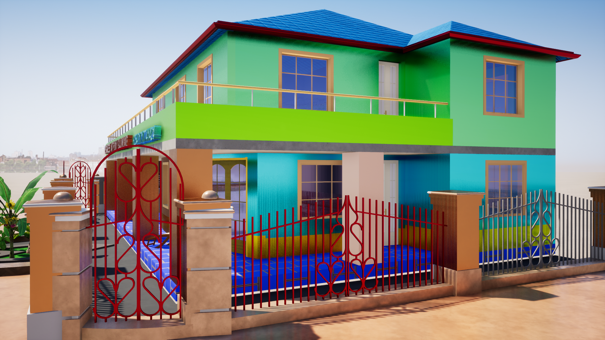

| STUDENT PERFORMANCES | |||||
|---|---|---|---|---|---|
| Student's Name | HTML 5 | CSS | BOOSTRAP | PHP & MYSQL | ANDROID |
| Anthony Baumuke | 75 | 80 | 70 | 89 | 76 |
| Grace John | 76 | 89 | 70 | 89 | 76 |
| Anna Martin | 70 | 84 | 70 | 89 | 76 |
| Mary Peter | 87 | 56 | 70 | 89 | 76 |
| Anthony Baumuke | 75 | 80 | 70 | 89 | 76 |
| Peter Job | 56 | 80 | 70 | 90 | 76 |
| Anthony Baumuke | 75 | 80 | 70 | 89 | 76 |
| Anthony Baumuke | 75 | 80 | 70 | 89 | 76 |
| Anthony Baumuke | 75 | 80 | 70 | 89 | 76 |
| Anthony Baumuke | 75 | 80 | 70 | 89 | 76 |
| Anthony Baumuke | 75 | 80 | 70 | 89 | 76 |
Saint Augustine of Hippo was born on November 13, 354, in the town of Thagaste, on the northern coast of Africa, in what is now Algeria. North Africa was part of the Roman Empire, though it was considered something of a backwater, far from the centers of imperial power.Augustine's father, Patricius (or Patrick), was a Decurion, a minor official of the Roman Empire.
The position was far from glamorous, however, because a Decurion was required to act as a patron for his community and to make up any shortfalls in taxes collected from the region. This responsibility probably kept a constant strain on the family's finances and may account for Augustine's assertions that his family was poor. Augustine had at least one brother, Navigius, and at least one sister, but little information is available about his siblings.
Patricius was a pagan, an adherent of the Roman civic religion. Augustine's mother, Monica (sometimes spelled Monnica), had been raised as a Christian. Although Patricius was only lukewarm about Christianity, he allowed Monica to raise the couple's children as Christians, and he finally converted to Christianity before his death. The example of his mother's fervent faith was a strong influence on young Augustine, one that would follow him throughout his life. In contrast, Patricius had relatively little influence on Augustine's character, and Patricius appears in the Confessions as a distant and vague figure.
Augustine showed early promise in school and, consequently, his parents scrimped and saved to buy their son a good Roman education, in the hope of ensuring him a prosperous career. He was sent to the nearby town of Madaura for further studies, but a lack of money forced him back home to Thagaste for a year, while his father tried to save more money for tuition. Augustine describes himself as a dissolute young man, unrestrained by his parents, who were more concerned with his success in school than his personal behavior.
When Augustine was about 16, his parents sent him to the university at Carthage, the largest city in the region. There he studied literature and poetry, in preparation for a career as a rhetor, a professional public speaker and teacher of rhetoric. Soon after Augustine came to Carthage, his father died, leaving Augustine as the nominal head of the family. In Carthage, he set up a household with a concubine, the mother of his son, Adeodatus, born about 372
During this period, he read the book that began his spiritual journey: Cicero's Hortensius, which he says inspired him with the desire to seek the truth, in whatever form he might find it. In Carthage, Augustine also encountered Manichaeism, the religion that dominated his life for the following decade. Augustine was attracted to Manichaeism's clear dividing line between good and evil, its highly intellectual mythology, and its strict moral standards.
In 384, Augustine moved to Milan, where he heard the preaching of Bishop Ambrose. Augustine had always considered Christianity intellectually lacking, but Ambrose's application of Neo-Platonic ideas to the interpretation of Christian scripture, presented with Ambrose's famous eloquence, captured Augustine's interest. Augustine had been growing steadily dissatisfied with Manichaeism, and Ambrose's influence encouraged him to make a break with the Manichees. Augustine read the works of the Neo-Platonists himself, and this reading revolutionized his understanding of Christianity. Meanwhile, Augustine's career was flourishing, and his worldly prospects were bright. His mother had followed him to Milan, and she arranged an advantageous marriage to a Christian girl from a good family, requiring Augustine to send his concubine away. In the fall of 386, he had a conversion experience that convinced him to renounce his career and his marriage prospects in order to dedicate his life to God. He spent the winter with a group of like-minded friends, withdrawn from the world, reading and discussing Christianity. At Easter 387, he was finally baptized by Bishop Ambrose. On their way back to Africa, his group of friends and family was delayed at the coastal city of Ostia, where Monica fell ill and died. The account of Augustine's life as set out in the Confessions ends there, when Augustine was about 35 years old, but his life's work was only beginning.
In 429, north Africa was invaded by the Vandals, another barbarian tribe from Europe. The Vandals besieged the city of Hippo during the summer of 430; Augustine fell ill during August. According to his biographer, Possidius, Augustine spent the last days of his life studying the penitential psalms, which he had posted on the walls of his room, and weeping over his sins. He demanded that no one visit him, giving him uninterrupted time to pray.
Augustine died on August 28, 430, at the age of 75, so he did not live to see the Vandals overrun Hippo in 431. The world Augustine had known, the old Roman Empire that had educated him even while he deplored it, was genuinely coming to an end. Augustine had an enormously influential role in shaping the world that replaced it, the Christianized civilization of Medieval Europe.
Augustine was a prolific writer, producing more than 300 sermons, 500 letters, and numerous other works on a wide variety of topics. Many of these works have yet to be translated into English, although a massive translation project is currently underway. Conscious that he was leaving behind a large and influential body of work, Augustine set about organizing and revisiting his writings toward the end of his life, in his Retractiones (Retractions, 427). Although he never completed this task, his work and that of his friend and biographer, Possidius, left future readers with a well-documented list of Augustine's works.